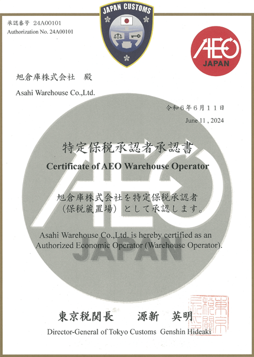
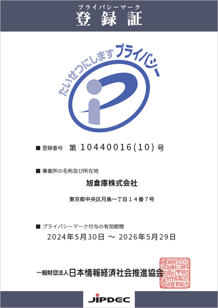

ISO認証
当社は品質マネジメントシステム（ISO9001）の認証を取得しています。
ISO（国際標準化機構、International Organization for Standardization）は、工業および商業の分野において国際的な標準を策定することを目的とした非政府組織です。1947年に設立され、世界中の国家標準化機関が加盟しています。
ISOの主な役割は、製品やサービスの品質、安全性、効率性を向上させるための国際標準を作成し、普及させることです。これにより、異なる国や地域で製品やサービスの互換性が確保され、国際貿易が円滑に行われるようになります。
ISO標準の例としては、品質管理のためのISO 9001、環境管理のためのISO 14001、情報セキュリティ管理のためのISO 27001などがあります。これらの標準は、企業や組織が業務の効率を高め、顧客満足を向上させるための指針となります。
ISOの主な役割は、製品やサービスの品質、安全性、効率性を向上させるための国際標準を作成し、普及させることです。これにより、異なる国や地域で製品やサービスの互換性が確保され、国際貿易が円滑に行われるようになります。
ISO標準の例としては、品質管理のためのISO 9001、環境管理のためのISO 14001、情報セキュリティ管理のためのISO 27001などがあります。これらの標準は、企業や組織が業務の効率を高め、顧客満足を向上させるための指針となります。
当社品質方針
- お客様から常に信頼される高品質のサービスを提供します。
- 顧客要求事項、法令･規制事項への適合及び品質マネジメントシステムの有効性の継続的改善に努めます。


| 初回登録 | 2007年11月30日 |
|---|---|
| 適合規格 | ISO 9001:2015、JIS Q 9001:2025 |
| 登録範囲 |
|
| 登録事業所 |
|
| 審査登録機関 | 日本海事検定キューエイ株式会社（NKKKQA） |
AEO制度
当社は、2024年に「特定保税承認者」の承認を受けました。
AEO（Authorized Economic Operator）制度とは、国際貿易の安全性と効率性を向上させるために導入された制度です。この制度では、安全管理とコンプライアンスが優れていると認められた企業に対して、通関手続きの簡素化や迅速化などの特典を提供します。
具体的には、AEO制度に認定された企業は、輸出入の際の通関手続きが簡略化され、手続きにかかる時間が大幅に短縮されます。これにより、物流の効率が向上し、コスト削減が期待できます。また、認定企業は、安全管理やリスク管理の厳しい基準をクリアしているため、取引先や関税当局からの信頼が厚くなります。
さらに、AEO制度は国際的に広がっており、多くの国で相互承認されています。これにより、認定企業は海外での取引においても同様の特典を享受でき、グローバルなビジネス展開がよりスムーズに行えます。
このように、AEO制度は信頼性と効率性を兼ね備えた国際貿易の促進に大きく寄与するものであり、企業の競争力を高める重要なツールとなっています。AEO認定を取得することで、企業は安全かつ効率的な貿易活動を実現し、ビジネスの成長を加速させることができます。
具体的には、AEO制度に認定された企業は、輸出入の際の通関手続きが簡略化され、手続きにかかる時間が大幅に短縮されます。これにより、物流の効率が向上し、コスト削減が期待できます。また、認定企業は、安全管理やリスク管理の厳しい基準をクリアしているため、取引先や関税当局からの信頼が厚くなります。
さらに、AEO制度は国際的に広がっており、多くの国で相互承認されています。これにより、認定企業は海外での取引においても同様の特典を享受でき、グローバルなビジネス展開がよりスムーズに行えます。
このように、AEO制度は信頼性と効率性を兼ね備えた国際貿易の促進に大きく寄与するものであり、企業の競争力を高める重要なツールとなっています。AEO認定を取得することで、企業は安全かつ効率的な貿易活動を実現し、ビジネスの成長を加速させることができます。

プライバシーマーク制度
当社は2006年にプライバシーマークを取得しプライバシーポリシーに沿って、その保護に努めております。
プライバシーマーク制度は、日本における個人情報保護を目的とした認証制度です。この制度は、日本情報経済社会推進協会（JIPDEC）によって運営されており、企業や団体が個人情報を適切に取り扱っていることを第三者機関が評価し、基準を満たしている場合に「プライバシーマーク」を付与します。
具体的には、企業や団体が個人情報の保護管理体制を整備し、適切な管理運用が行われているかどうかが審査されます。プライバシーマークを取得することで、その企業や団体が個人情報保護に対する信頼性が高いことを示すことができます。
具体的には、企業や団体が個人情報の保護管理体制を整備し、適切な管理運用が行われているかどうかが審査されます。プライバシーマークを取得することで、その企業や団体が個人情報保護に対する信頼性が高いことを示すことができます。
